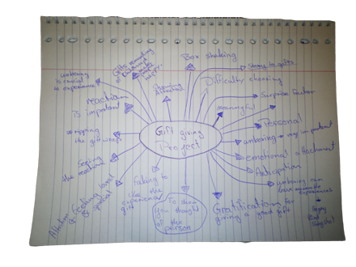
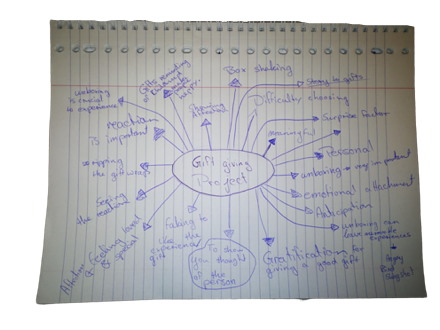
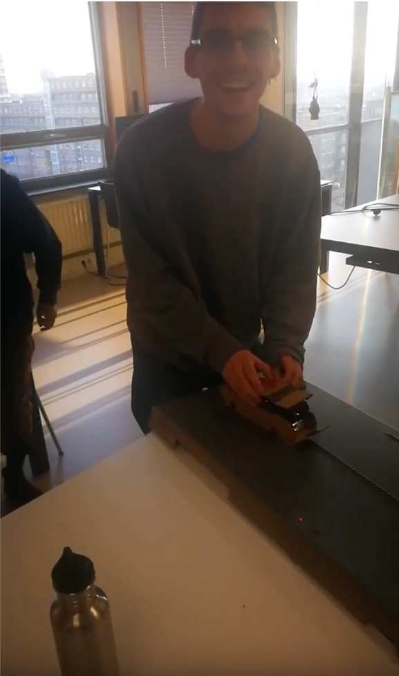
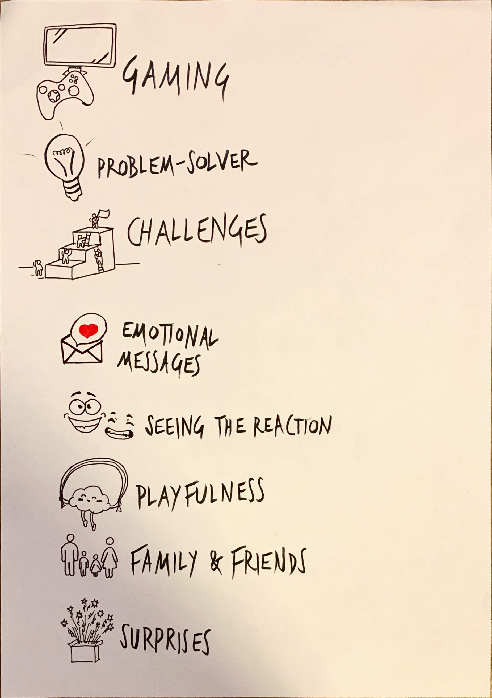
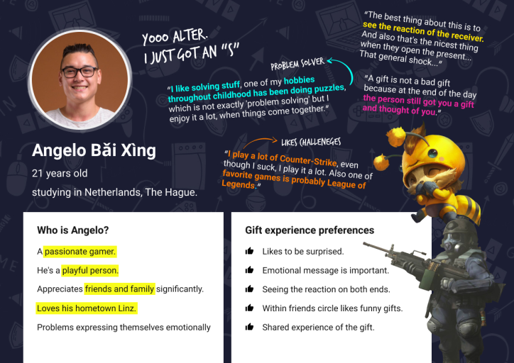
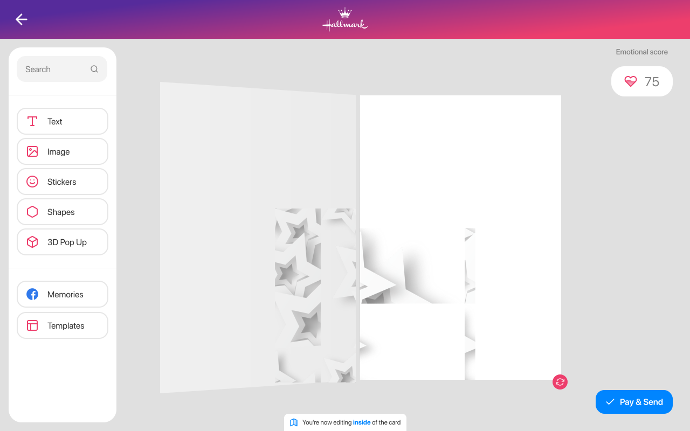

Hallmark is a renowned greeting card company, for years it been, the best way to create a card that is far more personal, than just a shop-bought card.
I was part of a two-man partner team to create an improved version of the Card Personalisation Tool, a Physical card and lastly a Bespoke Digital Unwrapping experience that expresses the giver’s emotional message
The Challenge
Digital gift are becoming more apparent in our daily lives, more of the daily utilities are becoming digital and with this are the gifts we send to each other. How can one recreate a digital unboxing experience that resembles the physical one? So, this becomes our goal create card tool that would Hallmarks existing one, create a physical representation of an end product from the Card personalisation tool and have that card lead to a digital unwrapping. The digital unwrapping would need to be a bespoke design created for our Persona.
My Involvement
I was in a Design Team with Adam Schwarcz from November 2019 until January of 2020. I went through the whole design process. I worked Co & Co with Adam on every step of the design process. The final prototype was presented to Hallmark on the 24th January 2020.
The Start
The first thing I did was to brainstorm what was important to an unwrapping experience what values are important.
Further on I went onto Hallmark and bought a card an Anniversary card for my parents and went through the whole process to understand it and to build a foundational understanding.
Then inside the design team, we identified key problem areas and things we wanted to find out.
.jpg) 

Early Insights
We were given set users from our Lectures of the University which we had to conduct user interviews with. Anything from the informal interview's till observations. Through this research, we gained some promising early insights.


To confirm some of our theories we created a physical unwrapping for Sinterklaas. The whole idea was to gain insights into how the user reacts and feels when unwrapping and what values he puts on what part of the unwrapping.

Define - Design Vision
Writing our design Vision Me & Adam gathered our Research information compared its and created a Persona that represented the issues our users were facing.
Furthermore, I put more emphasis on the main insights I had to make sure I do not lose track of these. Once I had that we focused on the individual goals we as a team wanted to accomplish with all parts of the projects.

For our Persona, it was really important that it incorporated all aspects of our User’s and really showcased their struggles and that someone unaware of the project would be able to grasp the direction we were trying to head into.
- Help the user express himself
- Keep him Motivated
- Improve the Aesthetic
- Connect to Social Platforms
- Seamless flow (drag & drop)
Card Personalisation tool:
- Unique
- Something the User wants to Keep
- Playful
Physical Card:
- Experience the inner Gamer
- Be playful
- Shared Experience
- Exciting and unexpected
Unwrapping:
Ideas to a Concept
Ideas for the physical card
Ideas for Shared experiences
Digital unwrapping
Card Personalisation Tool
I came up with 30 Sketches for Ideas and evaluated them with Adam's 30 sketches from these sketches we created 3 concepts which we did and evaluation matrix for the Final concept. We looked at which one suits our needs the best. From here onwards Adam took responsibility for the UI for the Card Personalisation Tool and I took over the UI for the Unwrapping. I & Adam continued to develop on the UX for the Card Personalisation tool
Concept
Iteration
I started with visualising the ideas on a low fidelity prototype and then doing tests to see if that feeling we were chasing after for was there and to see if there was core hence to the story and Unwrapping experience. Once we conducted those we went to digital prototyping.

Iteration 1

Iteration 2+3
The Final Product did not represent the visual idea we originally had we wanted it to be in a 3D space. But we did learn valuable insights from our prototypes. The Digital unwrapping did have the aspects we wanted to contain. We just ran short on time and did not have the skill set jet to create it the way we imagined. We focused too much on the Card Personalisation Tool which led us to have unevenly balanced experience. When redoing this project I would put more emphasis on how to enhance the digital experience and allow for a more diverse way of prototyping. The skills needed to recreate the ideas we pictured are not possible on a prototyping tool. As the vision was to have a 3D explorer able room. those we went to digital prototyping.
.gif)